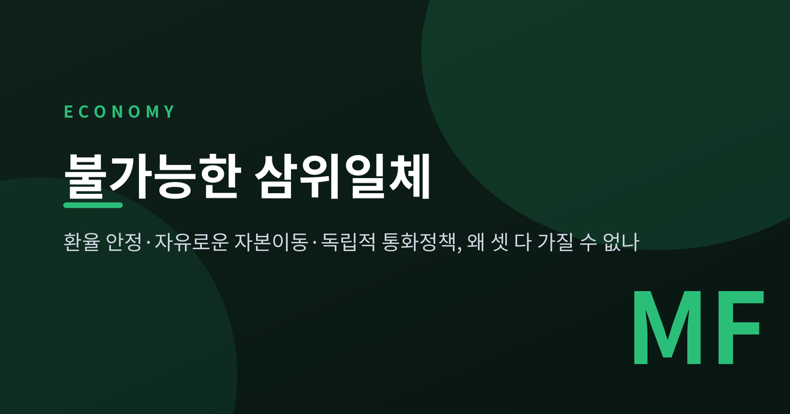
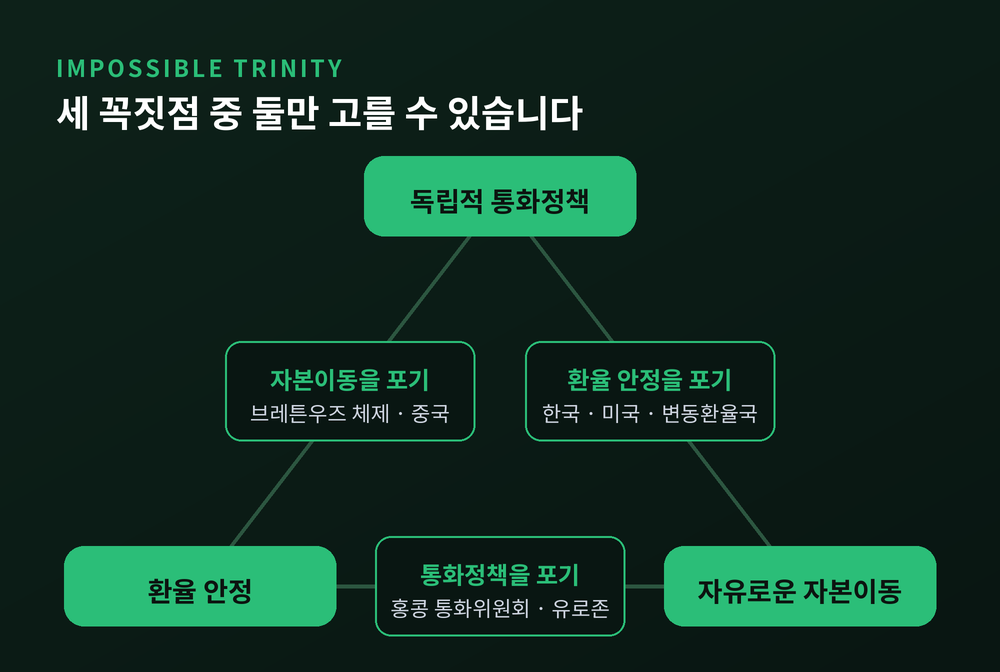
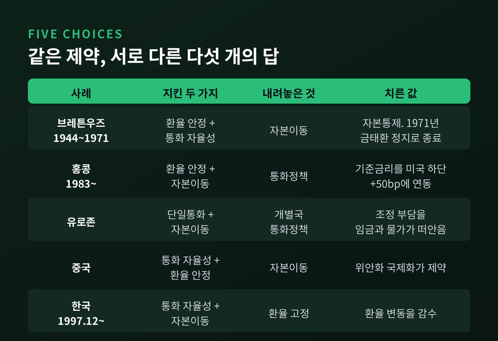
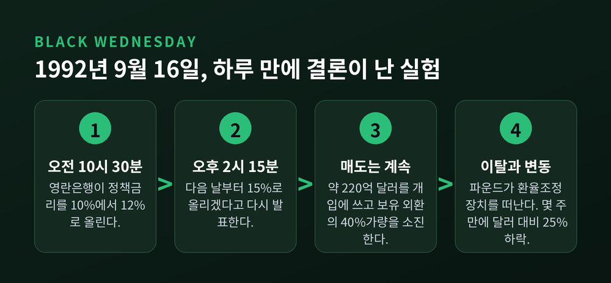
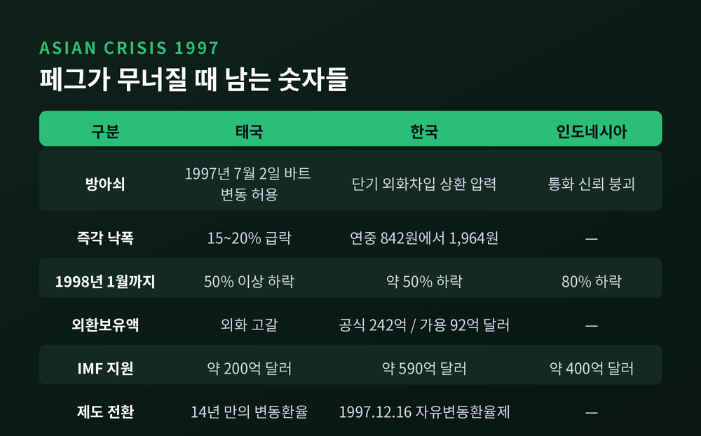
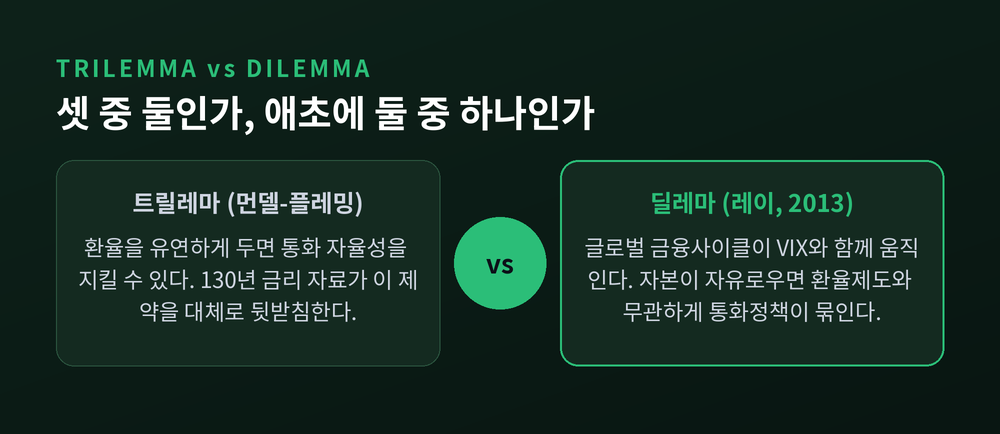
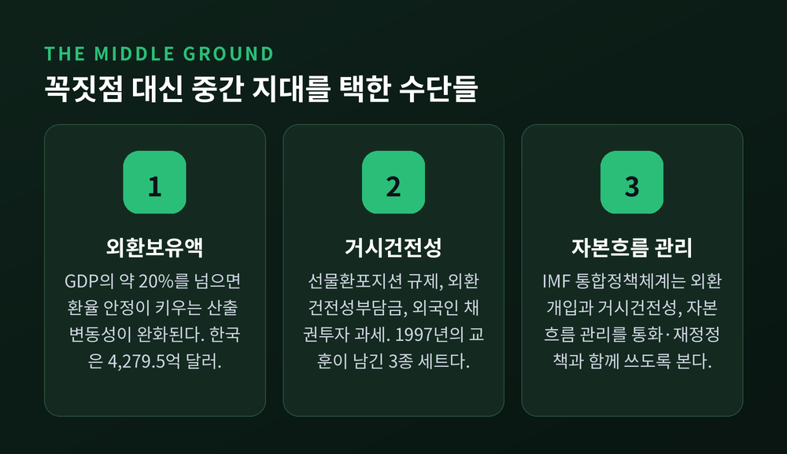

이번 글에서는 불가능한 삼위일체를 정리해 보겠습니다. 환율 안정, 자유로운 자본이동, 독립적 통화정책 가운데 왜 하나는 반드시 내려놓아야 하는지 다룹니다. 1960년대 이론에서 출발해 브레튼우즈와 홍콩, 1992년 런던과 1997년 서울까지 차례로 짚겠습니다.
불가능한 삼위일체는 개방경제 거시경제학의 기본 명제입니다. 한 나라는 환율 안정, 자유로운 국제 자본이동, 독립적 통화정책 가운데 최대 두 가지만 가질 수 있습니다.
1960년대 먼델-플레밍 모형이 이를 공식화했습니다. 케인지언 거시경제학을 개방경제로 확장한 모형입니다. 로버트 먼델은 이 공로 등으로 1999년 노벨경제학상을 받았습니다.
원리는 단순합니다. 자본이 자유롭게 오가면, 예상 환율 변동을 감안한 각국 금리가 서로 같아집니다. 여기서 환율까지 고정해 버리면 예상 변동분이 사라집니다. 남는 것은 하나입니다 — 국내 금리는 상대국 금리를 그대로 따라가야 합니다.
반대 방향도 성립합니다. 통화정책을 마음대로 쓰면서 자본이동도 열어두면, 금리 변경이 곧바로 자금 흐름을 바꾸고 환율에 압력을 가합니다. 고정환율은 버티지 못합니다.
그래서 정책 담당자 앞에 놓인 것은 선택지가 아니라 제약입니다. 세 꼭짓점 중 어디에 설지를 고르는 일입니다.

1944년, 미국 뉴햄프셔주 브레튼우즈의 마운트워싱턴 호텔에서 협정이 맺어집니다. 고정환율과 무역제한 완화로 국제무역을 넓히자는 구상이었습니다.
구조는 이랬습니다. 금 1온스를 35달러에 태환하고, 각국 통화를 달러에 연동합니다. 그리고 자본통제를 둡니다.
세 번째 항목이 핵심입니다. 자본이동을 묶어두었기 때문에 고정환율과 국내 통화정책을 함께 쥘 수 있었습니다. 트릴레마를 우회한 것이 아니라, 값을 치른 것입니다.
체제는 1971년 8월 15일에 끝납니다. 닉슨 대통령이 달러의 금태환을 일방적으로 정지했습니다. 임금·물가 동결과 수입 과징금이 함께 발표되었습니다.
흥미로운 것은 닉슨의 선택 순서입니다. 그는 자본이동 제한을 오히려 풀고 싶어 했고, 고정환율을 지키려 국내 통화정책을 묶는 데는 반대했습니다. 결국 통화 자율성과 자본이동을 택하고 환율 고정을 버린 셈입니다.
홍콩은 반대편 꼭짓점에 서 있습니다. 1983년 10월 17일부터 연계환율제도를 운영합니다. 미 달러당 7.75~7.85홍콩달러 밴드를 지킵니다.
작동 방식이 명확합니다. 홍콩금융관리국은 은행이 요청하면 7.75에서 홍콩달러를 팔고, 7.85에서 사들입니다. 본원통화는 미 달러 자산으로 100% 뒷받침되고, 본원통화의 모든 변화가 외환기금의 달러 자산 변화와 정확히 맞물립니다.
여기서 조정되는 것은 환율이 아니라 금리입니다. 홍콩금융관리국의 기준금리는 미국 연방기금금리 목표범위 하단에 50bp를 더한 값으로 기계적으로 연동됩니다. 통화정책이라기보다 연동 장치에 가깝습니다.
대가는 실제로 청구됩니다. 2022년 중반부터 2023년 초까지 미국 금리는 급등했지만 홍콩 은행간금리는 낮게 머물렀습니다. 금리차가 벌어지자 캐리 트레이드와 자본유출이 이어졌고, 홍콩달러는 오래 약세 압력을 받았습니다.
유로존은 같은 선택을 더 큰 규모로 했습니다. 마스트리흐트 조약이 통화정책을 유럽중앙은행에 넘겼고, 회원국은 통화정책 수단과 환율 수단을 모두 잃었습니다.
그리스가 그 대가를 가장 선명하게 보여줍니다. 2001년 1월 1일 유로존에 가입한 뒤, 위기 국면에서 조정 부담은 임금과 물가가 떠안아야 했습니다. 그리스 물가상승률은 유럽중앙은행의 2% 상한을 계속 웃돌았는데, 정책은 그리스에 경기순응적으로 작용해 사정을 악화시켰습니다.

중국은 자본계정 규제와 관리변동환율을 함께 씁니다. 완전한 자본계정 개방보다 통화 독립성과 환율 안정을 우선해 왔습니다.
이유는 규모입니다. 세계 2위 경제이자 거대한 내수시장을 가진 나라에서 통화정책 자율성은 거시운용의 핵심 지렛대입니다. 그 자율성을 얼마나 지킬 것인가가 환율 유연성과 개방 폭을 규정합니다.
연구들은 중국의 자본통제가 실질적인 구속력을 갖는다고 봅니다. 그 덕분에 고정적인 환율 운용에도 단기 통화 자율성을 일정 부분 확보했습니다.
물론 대가는 위안화의 국제화가 제약된다는 점입니다. 2015년부터 2017년까지 위안화 절하를 막기 위한 대규모 개입을 거친 뒤, 인민은행은 자본통제를 오히려 상당 폭 강화해야 했습니다.
이론이 이론으로만 머물지 않는다는 것을 보여준 사건이 있습니다.
영국은 1990년 10월 유럽 환율조정장치에 파운드당 2.95독일마르크로 참여했습니다. 회원국 통화는 ±2.25% 밴드 안에 머물러야 했고, 각국 중앙은행은 밴드 방어를 위해 개입할 의무를 졌습니다. 자본통제는 없었습니다.
독일 통일 이후 재정 차입이 늘자 분데스방크는 물가를 걱정해 금리를 올립니다. 자금이 독일로 빨려 들어갔고, 영국은 유출을 막기 위해 금리를 따라 올려야 하는 처지가 됩니다.
1992년 9월 16일의 시간표는 이렇습니다.
방어에 쓴 비용은 약 220억 달러 규모의 시장 개입이었고, 보유 외환의 약 40%를 소진한 것으로 추정됩니다. 이후 몇 주 사이 파운드는 달러 대비 약 25% 떨어졌습니다.
같은 날 이탈리아도 리라를 이탈시켰고 스페인은 페세타를 절하했습니다. 1993년 8월에는 잔류 통화들의 변동폭이 ±15%로 확대됩니다. 밴드라는 이름만 남은 셈입니다.
영국은 그해 10월 물가안정목표제를 도입합니다. 뉴질랜드와 캐나다에 이은 것이었습니다. 환율을 놓아준 자리에 물가라는 새 닻을 내린 것입니다.

5년 뒤 아시아에서 같은 명제가 반복됩니다.
1997년 7월 2일, 태국 중앙은행이 14년 만에 바트화를 달러에 대해 변동시킵니다. 외화가 바닥났기 때문입니다. 바트는 즉시 15~20% 급락했습니다.
전염은 빨랐습니다. 1998년 1월까지 인도네시아 루피아는 달러 대비 80%, 한국 원화는 약 50%, 태국 바트는 50% 이상 가치를 잃었습니다.
한국의 숫자는 특히 냉정합니다. 1997년 11월 26일 기준 공식 외환보유액은 242억 달러였지만, 실제 쓸 수 있는 가용 외환보유액은 92억 달러였습니다. 원/달러 환율은 그해 초 842원에서 최고 1,964원까지 올랐습니다.
국제통화기금 지원 패키지는 태국 약 200억 달러, 인도네시아 약 400억 달러, 한국 약 590억 달러 규모였습니다.
구조는 앞서 본 것과 같습니다. 사실상 달러에 묶어둔 환율, 열려 있는 자본계정, 그리고 단기 외화차입에 기댄 자금 구조. 세 가지를 다 가지려 한 시도가 위기로 정산된 것입니다.
한국은 1997년 12월 16일 자유변동환율제로 넘어갑니다. 더는 개입으로 환율을 방어할 수 없다는 판단이었습니다.

여기까지가 교과서의 이야기입니다. 그런데 2013년에 강한 반론이 나옵니다.
엘렌 레이는 그해 8월 잭슨홀 심포지엄에서 「Dilemma not Trilemma」를 발표합니다. 자본흐름과 자산가격, 신용증가에는 하나의 글로벌 금융사이클이 존재하고, 이것이 시장의 위험회피 지표인 VIX와 함께 움직인다는 관찰이었습니다.
그리고 이 사이클을 주로 결정하는 것은 미국 통화정책입니다.
여기서 결론이 갈립니다. 자본이 자유롭게 이동하는 한, 환율제도와 무관하게 각국 통화정책이 제약받는다는 것입니다. 변동환율제를 택했으니 통화 자율성은 지켜졌다는 위안이 성립하지 않게 됩니다. 삼자택이가 아니라 양자택일이라는 뜻에서 딜레마입니다.
레이의 처방은 자본계정을 직간접적으로 관리하는 것, 그리고 과도한 레버리지와 신용팽창을 억제하는 거시건전성 정책입니다.
반론에 대한 반론도 있습니다. 국제통화기금 연구는 자율성을 훼손하는 스필오버가 고정환율국에서 유의하게 크며, 변동환율국에 대해서는 완전한 통화 자율성 가설을 기각하지 못한다고 봅니다. 반면 다른 국제통화기금 연구는 미국 통화정책이 칠레·콜롬비아·멕시코 같은 변동환율제 국가의 정책금리에도 강한 영향을 준다고 보고합니다.
최근 국제결제은행 연구는 절충에 가깝습니다. 대외 외화부채가 많고 외환시장이 얕은 신흥국 중앙은행일수록 미국 통화정책 서프라이즈에 맞춰 정책금리를 함께 움직이고, 그만큼 환율 변동폭은 작게 나타난다는 것입니다.
정리하면 환율제도 자체보다 금융 취약성의 정도가 자율성의 실제 크기를 좌우한다는 이야기입니다. 어느 한쪽이 완전히 옳다고 말하기는 아직 이릅니다.

현실의 나라들은 삼각형의 꼭짓점에 서 있지 않습니다.
아이젠먼·친·이토는 세 축을 각각 지수화했습니다. 통화정책 독립성은 자국 금리와 기준국 금리의 상관계수로, 환율 안정성은 환율 변동성으로, 금융 통합도는 자본통제 지수로 측정하고 여기에 외환보유액을 함께 고려합니다.
측정 결과가 말해주는 것은 이렇습니다. 1990년대 위기를 겪은 신흥국들은 관리변동환율, 통제된 금융통합, 제한적이지만 실효적인 통화 독립성이라는 중간 지대로 수렴했습니다.
숫자도 나옵니다. 환율 안정성을 높이면 산출 변동성이 커지지만, 외환보유액을 국내총생산의 약 20% 이상 보유하면 그 부작용이 완화됩니다. 통화 독립성이 클수록 산출 변동성은 낮아지고 물가는 높아지는 경향이 있습니다.
국제통화기금도 같은 방향으로 정리했습니다. 통합정책체계는 외환시장 개입, 거시건전성 조치, 자본흐름 관리조치를 통상의 통화·재정정책과 함께 쓰는 방안을 다룹니다. 2023년 12월에는 외환시장 개입 활용 원칙을 담은 정책보고서가 나왔습니다.
예전에는 어느 꼭짓점을 택할 것인가가 질문이었습니다. 지금은 세 축을 각각 어느 정도로 조절할 것인가가 질문입니다.

한국은 자유변동환율과 열린 자본계정을 택한 나라입니다. 그 대가로 통화정책 독립성을 확보했고, 대신 환율 변동은 감수합니다.
다만 순수한 꼭짓점은 아닙니다. 완충 장치를 함께 씁니다.
외환보유액이 첫 번째입니다. 2026년 7월말 기준 4,279억 5천만 달러로, 전월말보다 5억 9천만 달러 늘었습니다. 2026년 6월말 기준으로는 세계 10위 수준입니다. 참고로 같은 시점 1위는 중국으로 3조 4,163억 달러입니다.
두 번째는 거시건전성 3종 세트입니다. 은행 자기자본 대비 선물환 보유액 비율을 제한하는 선물환포지션 규제, 비예금성 외화부채에 매기는 외환건전성부담금, 그리고 외국인 채권투자 과세 제도입니다. 1997년의 교훈이 제도로 남은 것입니다.
한계도 분명합니다. 이 수단들은 자본흐름의 방향을 바꾸지 못합니다. 속도를 늦추고 충격을 완화할 뿐입니다. 글로벌 금융사이클이 크게 돌아설 때 소규모 개방경제가 완전히 자유로울 수 있다고 보기는 어렵습니다.
그래서 중요한 것은 순위나 절대 금액보다 구조입니다. 대외 외화부채의 만기와 통화 구성, 외환시장의 깊이. 이런 것들이 실제 자율성의 크기를 결정합니다.
정리하면 이렇습니다. 불가능한 삼위일체는 금지 조항이 아니라 청구서입니다.
세 가지를 다 원한다고 말할 수는 있습니다. 다만 그 순간 어느 항목의 값이 어떤 형태로 청구될지가 정해질 뿐입니다. 브레튼우즈는 자본통제로, 홍콩은 연동된 금리로, 유로존은 임금과 물가로, 1992년 런던과 1997년 서울은 위기로 그 값을 치렀습니다.
이 글은 이론과 제도를 정리한 것이지 환율이나 금리의 방향을 전망하거나 특정 자산을 권하는 글이 아닙니다. 투자 판단은 각자의 사정에 맞춰 내리시는 편이 좋겠습니다.
환율 뉴스가 어렵게 느껴지셨다면, 삼각형의 어느 변에서 벌어지는 이야기인지부터 물어보시길 권합니다. 그 질문 하나로 대부분의 소음이 걷힙니다.